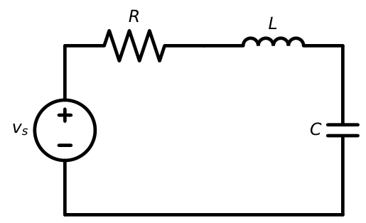
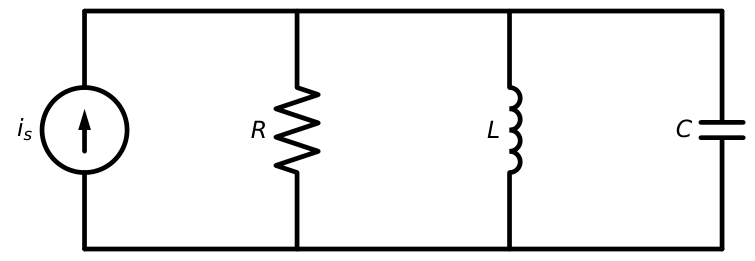
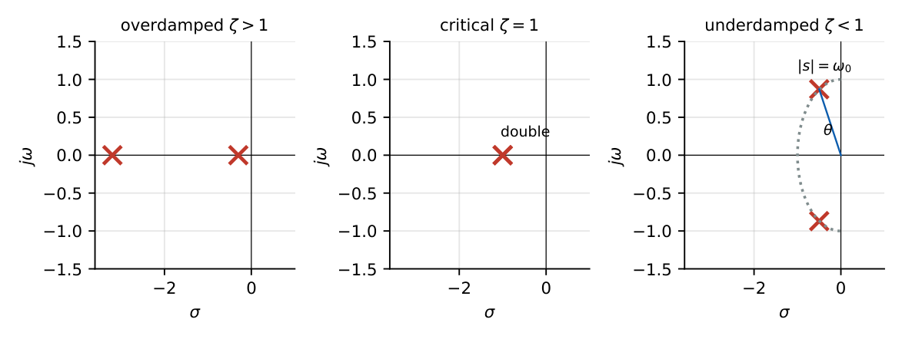
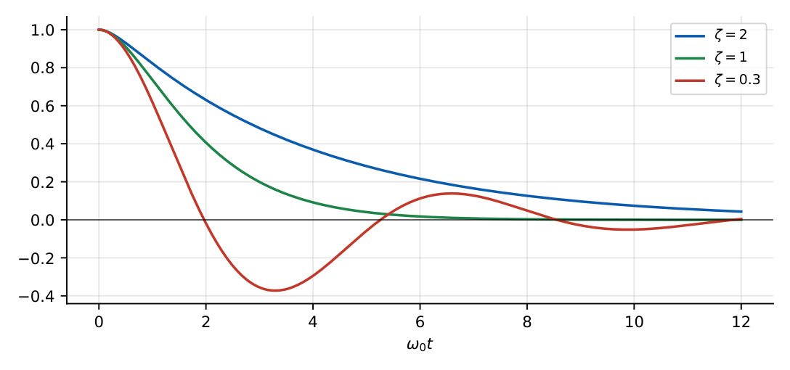
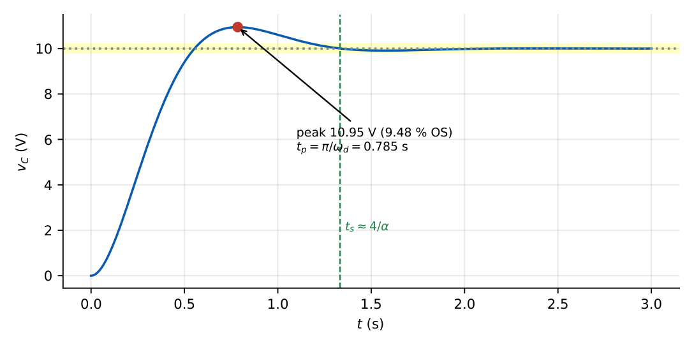
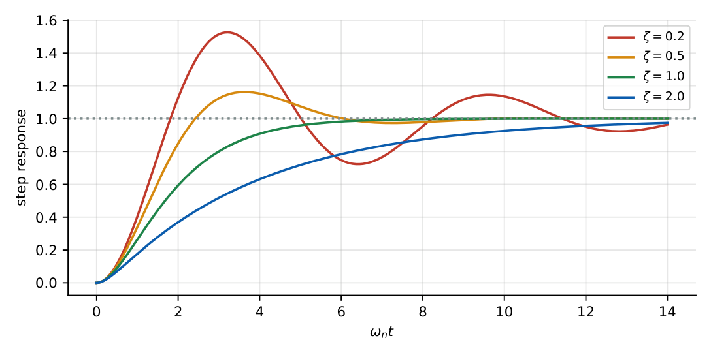
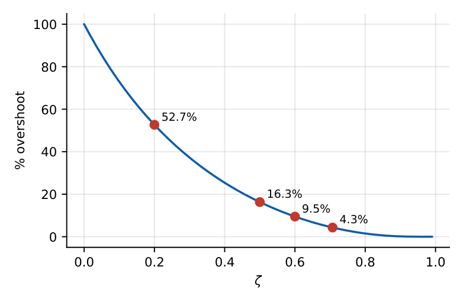

Second-Order Circuits
In this chapter
- 10.1 RLC circuits
- 10.2 Differential equation formulation
- 10.3 Characteristic equation and natural response
- 10.4 Overdamped response
- 10.5 Critically damped response
- 10.6 Underdamped response
- 10.7 Damping ratio and natural frequency
- 10.8 Complete response and step response
- 10.9 Impulse response and initial conditions
Classify damping from \(R,L,C\); compute \(\alpha\), \(\omega_0\), \(\zeta\), \(\omega_d\); overshoot, peak time, critical-damping resistance; initial conditions \(v_C(0)\), \(i_L(0)\), \(\mathrm{d}v_C/\mathrm{d}t(0)=i_C(0)/C\).
10.1 RLC circuits
Two independent energy-storage elements give a second-order differential equation. Figure 10.1 shows the series RLC; the parallel RLC is its dual.


10.2 Differential equation formulation
Series RLC, output \(v_C\), input \(v_s\): \(LC\dfrac{d^2v_C}{dt^2}+RC\dfrac{dv_C}{dt}+v_C=v_s\). Divide by \(LC\): \[\frac{d^2v_C}{dt^2}+2\alpha\frac{dv_C}{dt}+\omega_0^2v_C=\omega_0^2v_s.\]
\(\alpha=\dfrac R{2L}\), \(\omega_0=\dfrac1{\sqrt{LC}}\), \(\zeta=\dfrac\alpha{\omega_0}=\dfrac R2\sqrt{\dfrac CL}\).
Parallel: \(\alpha=\dfrac1{2RC}\), \(\omega_0=\dfrac1{\sqrt{LC}}\), \(\zeta=\dfrac1{2R}\sqrt{\dfrac LC}\).
10.3 Characteristic equation and natural response
\(s^2+2\alpha s+\omega_0^2=0\Rightarrow s_{1,2}=-\alpha\pm\sqrt{\alpha^2-\omega_0^2}=-\zeta\omega_0\pm\omega_0\sqrt{\zeta^2-1}.\) The roots decide the shape of the response (Figure 10.2).

10.4 Overdamped response
\(\alpha>\omega_0\) (\(\zeta>1\)): \(s_{1,2}\) real, distinct. \(x(t)=x_f+A_1e^{s_1t}+A_2e^{s_2t}\). No oscillation; slower than critical damping.
Series RLC, \(L=1\) H, \(C=0.25\) F, \(R=5\ \Omega\): \(\alpha=2.5\), \(\omega_0=2\), \(s=-2.5\pm1.5=-1,\,-4\). Natural response with \(v_C(0)=10\) V, \(i_L(0)=0\): \(A_1+A_2=10\); \(\dot v_C(0)=i_L(0)/C=0\Rightarrow-A_1-4A_2=0\). So \(A_2=-10/3\), \(A_1=40/3\): \[v_C(t)=\tfrac{40}{3}e^{-t}-\tfrac{10}{3}e^{-4t}.\]
10.5 Critically damped response
\(\alpha=\omega_0\) (\(\zeta=1\)): \(s_1=s_2=-\alpha\); \(x(t)=x_f+(A_1+A_2t)e^{-\alpha t}\). The fastest non-oscillatory decay. Critical resistance: series \(R_c=2\sqrt{L/C}\); parallel \(R_c=\tfrac12\sqrt{L/C}\).
\(L=1\) H, \(C=1\) F, \(R=2\ \Omega\): \(\alpha=\omega_0=1\). With \(v_C(0)=5\) V, \(i_L(0)=0\): \(A_1=5\), \(A_2-A_1=0\Rightarrow A_2=5\): \(v_C=5(1+t)e^{-t}\).
10.6 Underdamped response
\(\alpha<\omega_0\) (\(\zeta<1\)): \(s=-\alpha\pm j\omega_d\), \(\omega_d=\sqrt{\omega_0^2-\alpha^2}=\omega_0\sqrt{1-\zeta^2}\). \(x(t)=x_f+e^{-\alpha t}(B_1\cos\omega_dt+B_2\sin\omega_dt)=x_f+Ke^{-\alpha t}\cos(\omega_dt+\theta)\).

10.7 Damping ratio and natural frequency
\(\zeta\) is the ratio of actual damping to critical damping; \(\omega_0\) is the undamped natural frequency. Undamped (\(R=0\), \(\zeta=0\)): pure oscillation at \(\omega_0\). Standard form for transfer functions: \(H(s)=\dfrac{\omega_n^2}{s^2+2\zeta\omega_ns+\omega_n^2}\).
10.8 Complete response and step response
Complete response \(=\) forced (final value) \(+\) natural (roots). Determine constants from \(v_C(0^+)\) and \(\dot v_C(0^+)=i_C(0^+)/C\).
Series RLC, \(R=6\ \Omega\), \(L=1\) H, \(C=0.04\) F, step \(V_s=10\) V, zero initial state. \(\alpha=3\), \(\omega_0=5\), \(\omega_d=4\), \(\zeta=0.6\).
\(v_C=10+e^{-3t}(B_1\cos4t+B_2\sin4t)\). \(v_C(0)=0\Rightarrow B_1=-10\). \(\dot v_C(0)=0\Rightarrow-3B_1+4B_2=0\Rightarrow B_2=-7.5\):
\[v_C(t)=10-e^{-3t}(10\cos4t+7.5\sin4t)\ \text{V}.\]
Overshoot: \(\%OS=100e^{-\pi\zeta/\sqrt{1-\zeta^2}}=100e^{-2.356}=9.48\%\); peak time \(t_p=\pi/\omega_d=0.785\) s; peak value \(10.948\) V.

\(t_p=\dfrac{\pi}{\omega_d}\), \(\%OS=100\,e^{-\pi\zeta/\sqrt{1-\zeta^2}}\), \(t_s(2\%)\approx\dfrac{4}{\zeta\omega_n}\), \(t_r\approx\dfrac{1.8}{\omega_n}\) (for \(\zeta\approx0.5\)).


10.9 Impulse response and initial conditions
The impulse response of \(H(s)\) is the inverse transform of \(H(s)\); for the underdamped case \(h(t)=\dfrac{\omega_n}{\sqrt{1-\zeta^2}}e^{-\zeta\omega_nt}\sin\omega_dt\). Initial conditions: \(v_C(0^+)=v_C(0^-)\), \(i_L(0^+)=i_L(0^-)\), \(\dot v_C(0^+)=i_C(0^+)/C\), \(\dot i_L(0^+)=v_L(0^+)/L\).
(i) \(\alpha\) is \(R/2L\) for the series circuit but \(1/2RC\) for the parallel one. (ii) Increasing \(R\) in a series circuit increases damping; increasing \(R\) in a parallel circuit decreases damping. (iii) For the step response the constants \(B_1,B_2\) are found from the complete response including \(x_f\), not from the natural part alone. (iv) Overshoot depends only on \(\zeta\), not on \(\omega_n\).
Q1. A series RLC circuit is underdamped when (A) \(R>2\sqrt{L/C}\) (B) \(R=2\sqrt{L/C}\) (C) \(R<2\sqrt{L/C}\) (D) \(R=0\) only.
Q2. The roots of \(s^2+2s+5=0\) imply the response is (A) overdamped (B) critically damped (C) underdamped (D) unstable.
Q3. A parallel RLC becomes more underdamped when \(R\) (A) increases (B) decreases (C) is unchanged (D) is infinite \(\Rightarrow\) critically damped.
Answers: Q1 (C). Q2 (C): \(\alpha=1\), \(\omega_0^2=5\), \(\zeta=0.447\). Q3 (A): \(\alpha=1/2RC\) shrinks as \(R\) grows.
Q4. A series RLC has \(L=1\) H and \(C=0.25\) F. The value of \(R\) for critical damping is (A) \(2\ \Omega\) (B) \(4\ \Omega\) (C) \(8\ \Omega\) (D) \(1\ \Omega\).
Q5. The step response of \(H(s)=25/(s^2+6s+25)\) has percentage overshoot (A) \(9.5\%\) (B) \(16.3\%\) (C) \(25\%\) (D) \(0\%\).
Answers: Q4 (B): \(2\sqrt{1/0.25}=4\). Q5 (A): \(\omega_n=5\), \(\zeta=0.6\), \(\%OS=9.48\).
Q6. A series RLC with \(R=6\ \Omega\), \(L=1\) H, \(C=0.04\) F has damped frequency \(\omega_d=\) rad/s.
Q7. A parallel RLC with \(R=5\ \Omega\), \(C=0.1\) F, \(L=0.1\) H has damping ratio \(\zeta=\) .
Answers: Q6: \(\alpha=3\), \(\omega_0=5\), \(\omega_d=4\). Q7: \(\alpha=1/(2RC)=1\), \(\omega_0=1/\sqrt{0.01}=10\), \(\zeta=0.1\).
Q8. For \(0<\zeta<1\): (A) poles are complex conjugates in the left half plane (B) the response oscillates with decaying envelope (C) overshoot is independent of \(\omega_n\) (D) settling time \(\approx4/\zeta\omega_n\).
Answers: Q8: all four (A), (B), (C), (D).
(i) Wrong \(\alpha\) for parallel vs series. (ii) Using \(v_C(0)\) only; forgetting \(\dot v_C(0)=i_C(0)/C\). (iii) Confusing \(\omega_d\) and \(\omega_0\). (iv) Taking overshoot in volts rather than percent of final value.
T1. Classify \(s^2+5s+4=0\) and give the natural response form.
T2. Find \(t_p\) and \(\%OS\) for \(\omega_n=10\), \(\zeta=0.5\).
Answers: T1: roots \(-1,-4\), overdamped, \(A_1e^{-t}+A_2e^{-4t}\). T2: \(\omega_d=8.66\), \(t_p=0.363\) s, \(\%OS=16.3\%\).
- Series: \(\alpha=R/2L\), \(\omega_0=1/\sqrt{LC}\); parallel: \(\alpha=1/2RC\). \(\zeta=\alpha/\omega_0\).
- \(s=-\alpha\pm\sqrt{\alpha^2-\omega_0^2}\). \(\zeta>1\) over, \(=1\) critical, \(<1\) under; \(\omega_d=\sqrt{\omega_0^2-\alpha^2}\).
- Forms: \(A_1e^{s_1t}+A_2e^{s_2t}\); \((A_1+A_2t)e^{-\alpha t}\); \(e^{-\alpha t}(B_1\cos\omega_dt+B_2\sin\omega_dt)\).
- \(t_p=\pi/\omega_d\); \(\%OS=100e^{-\pi\zeta/\sqrt{1-\zeta^2}}\); \(t_s\approx4/\alpha\).
- Constants from \(v_C(0^+)\) and \(i_C(0^+)/C\).